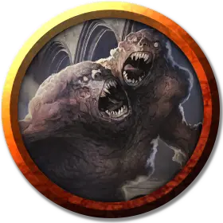

Дух тени
Shadow Spirit
Средний Монстр, без мировоззрения

Класс Доспеха 11 + уровень ячейки (природный доспех)
Хиты 35 + 15 за каждый уровень ячейки выше 3-го
Скорость 40 футов
| мод | спас | ||
|---|---|---|---|
| СИЛ | 13 | +1 | +1 |
| ЛОВ | 16 | +3 | +3 |
| ТЕЛ | 15 | +2 | +2 |
| мод | спас | ||
|---|---|---|---|
| ИНТ | 4 | −3 | −3 |
| МДР | 10 | +0 | +0 |
| ХАР | 16 | +3 | +3 |
Сопротивление урону некротическая энергия
Иммунитет к состояниям испуг
Чувства тёмное зрение 120 футов, пассивное Восприятие 10
Языки понимает языки, на которых вы говорите
Опасность —
Особенности
Безумный ужас (только ярость). Дух совершает броски атаки против испуганных существ с преимуществом.
Тяжесть печали (только уныние). Любое существо, кроме вас, начинающее свой ход в пределах 5 футов от духа, имеет скорость на 20 футов меньше обычной до начала своего следующего хода.
Действия
Мультиатака. Тень совершает количество атак, равное половине уровня ячейки, использованной для призыва (с округлением в меньшую сторону).
Леденящее растерзание. Рукопашная атака оружием: ваш модификатор броска атаки заклинанием к попаданию, досягаемость 5 фт., одна цель. Попадание: 1к12 + 3 + уровень ячейки урона холодом.
Ужасающий крик (1/день). Дух кричит. Каждое существо в пределах 30 футов от него должно преуспеть в спасброске Мудрости против Сл спасброска ваших заклинаний, иначе станет испуганным духом на 1 минуту. Испуганное существо может повторять спасбросок в конце каждого своего хода, прекращая это состояние в случае успеха.
Бонусные действия
Скрытность в тенях (только страх). Находясь в тусклом свете или темноте, дух совершает действие Засада.
Описание
Блок статистики для призыва духа тени с помощью заклинания призыв духа тени [summon shadowspawn].